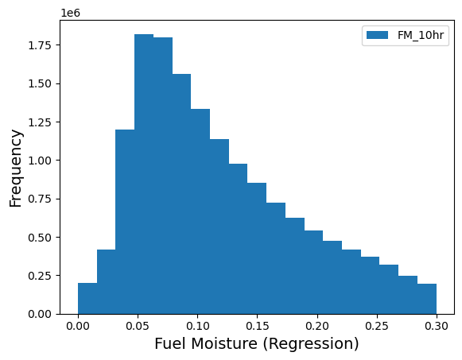
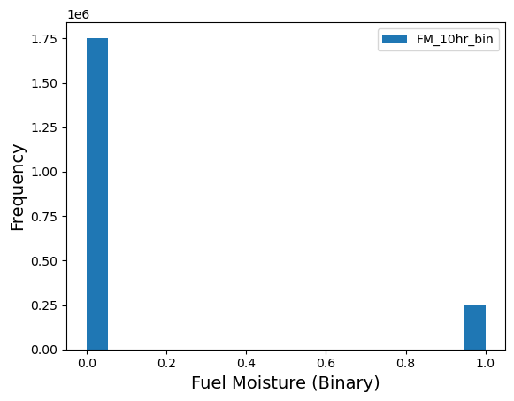
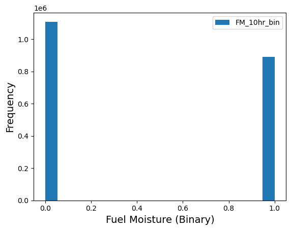
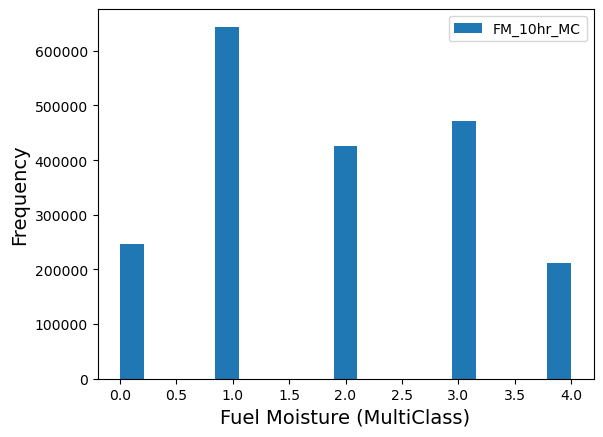

Step 2: Prepare Data¶
Driver: Step2_PrepareData/Prepare_TrainTest_Data.py
Config: json_prep_data_label.json
What this step does¶
Step 1 produced raw atmospheric values with associated FM values. Step 2 turns those into the features and labels an ML model consumes — selecting which quantities to use, computing derived quantities, converting FM into the label form the problem needs, and optionally pruning outliers.
Scaling is not done here; it happens in Step 3.
Selecting features¶
features.qois_to_use picks which quantities become features. It is a subset of
the qois_to_read used during extraction, optionally plus HGT:
Shortened names
PREC and SW are the prepared-data names for PRECIP and SWDOWN, which
are what the raw and extracted data call them.
Derived features¶
qois_derived requests quantities computed from extracted ones. Currently
vapor pressure deficit (VPD) is supported — the difference between saturation
and actual vapor pressure, derived from T2 and RH.
VPD is attractive because it folds temperature and humidity into a single variable that may be more directly relevant to fuel moisture, potentially reducing the feature count without losing skill. Whether it actually does is examined in Physical Quantities.
It is computed from the Clausius–Clapeyron relation. With \(dtt = T_2 - 273.16\):
where \(e_s\) is saturation vapor pressure and \(e\) is vapor pressure. The coefficients (Almgren et al., 2023) are:
| Coefficient | Value | Coefficient | Value | |
|---|---|---|---|---|
| \(a_0\) | 6.105851 | \(a_5\) | 2.031998e-8 | |
| \(a_1\) | 0.4440316 | \(a_6\) | 6.936113e-11 | |
| \(a_2\) | 1.430341e-2 | \(a_7\) | 2.564861e-14 | |
| \(a_3\) | 2.641412e-4 | \(a_8\) | -3.704404e-16 | |
| \(a_4\) | 2.995057e-6 |
Preparing labels¶
FM_labels.label_type selects the problem type. All three use the same extracted
data; they differ only in how FM values become labels.
Regression¶
Raw floating-point FM values are used directly — no further computation.

Distribution of 10-hour fuel moisture in a randomized dataset from Step 1.
Binary classification¶
FM values above the threshold get label 0 (moist, not prone to wildfire);
values at or below get label 1 (dry, prone to wildfire).
The threshold materially changes class balance:

FM_binary_threshold = 0.05

FM_binary_threshold = 0.10
Multi-class classification¶
"FM_labels": {
"label_type": "MultiClass",
"FM_MC_levels": [0.0, 0.03, 0.06, 0.09, 0.12, 0.15, 0.19, 0.23, 0.27, 0.35, 1.0]
}
FM_MC_levels gives the class boundaries, which need not be uniform. The
list above assigns label 0 for \(0.0 \le FM < 0.03\), label 1 for
\(0.03 \le FM < 0.06\), and so on.

Multi-class label distribution for a non-uniform set of FM levels, 10-hour fuel moisture.
Pruning outliers¶
ML methods often perform very differently across portions of the sample. Where a
clear cutoff exists, prune_data restricts training to a range:
This keeps only rows where 10-hour FM falls in \([10^{-5}, 0.3]\). Pruning can be applied to several variables at once, each with its own range.
Not the same as best-95% evaluation
Pruning removes rows from the training data. The test_p95 and
test_p90 metrics in Step 3 instead
rank predictions by error and discard the worst. The two are unrelated.
Sample configuration¶
{
"paths": { "prepared_data_base_loc": ".../02_TrainTest_Data_Prepared" },
"label_defn": { "label_count": 6 },
"FM_labels": {
"label_type": "Regression",
"FM_binary_threshold": 0.03,
"FM_MC_levels": [0.0, 0.03, 0.06, 0.09, 0.12, 0.15, 0.19, 0.23, 0.27, 0.35, 1.0]
},
"features": {
"qois_to_use": ["HGT", "UMag10", "T2", "RH", "PREC", "SW"],
"qois_derived": ["VPD"]
},
"qoi_to_plot": { "FM_hr": 10 },
"prune_data": { "FM_10hr": [0.00001, 0.3] }
}
label_count is the identifier for this prepared dataset, used throughout the
rest of the pipeline.
Output¶
A prepared dataset containing the selected and derived features alongside labels
in the requested form, written under prepared_data_base_loc. This feeds
Step 3.